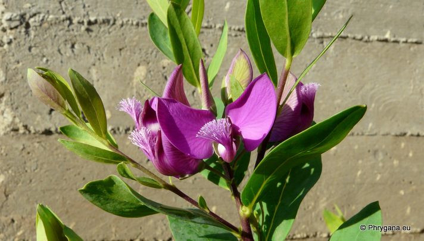
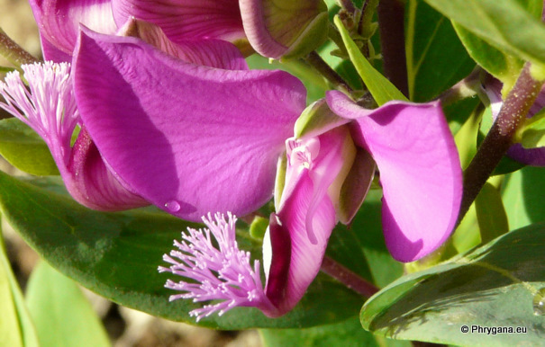
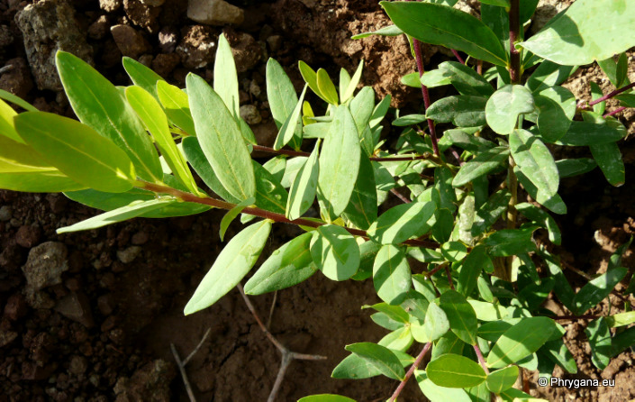

| PHRYGANA | Fauna | Flora |
additions nouveautés |
espèces species |
contact -
info - commentaires phrygana1 (at) gmail.com |
| diversité crétoise -- Cretan diversity | |||||
| Polygala myrtifolia L. |
| 224 | Flora | POLYGALACEAE | Polygala |
 Polygala myrtifolia Melambes (Agios Giorgos) 13 décembre 2008 |
| Feuilles: feuilles entières, oblongues, non dentées, courtement pétiolées | |
| Fleurs: couleur lilas à rose foncé, longues de 15 - 20 mm, groupées en racèmes courts; ailes rose foncé pourpré, nettemnt plus grandes que lespétales. | |
| Fruit: une capsule | |
| Hauteur: 100 - 250 cm | Type biologique: nanophanérophyte |
| Floraison: octobre novembre décembre janvier | |
| Altitudes: 0 - 500 m | |
| Statut en Crète: introduit - cultivé -- introduced - cultivated | |
| Biotopes en Crète: jardins, parcs | |
| Distribution: région Méditerranéenne (naturalisé en Corse, sud de la France, Sicile); origine Afrique du Sud | |
|
 Polygala myrtifolia Melambes (Agios Giorgos) 13 décembre 2008 |
|
 Polygala myrtifolia Melambes (Agios Giorgos) 13 décembre 2008 |
| 02 janvier 2011 |
| © paul fontaine -- © Phrygana.eu 2007 -- 2013 |